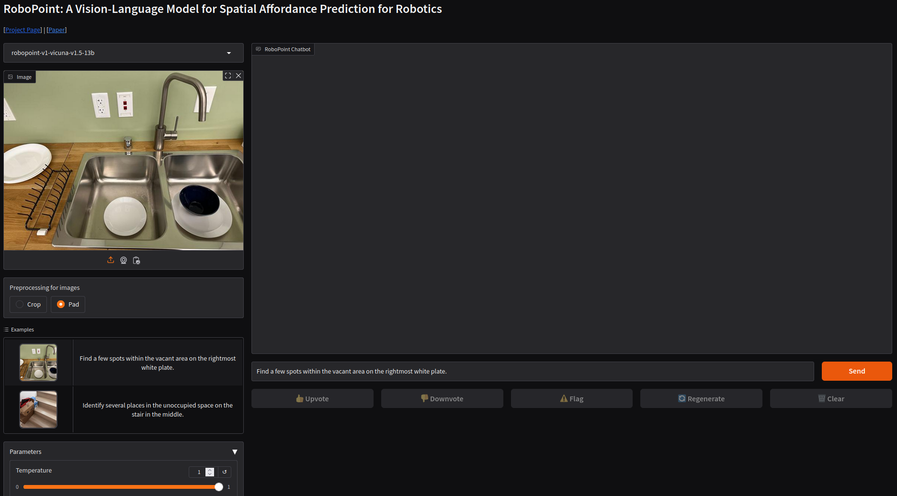

Tutorial - RoboPoint VLM for Robotic Manipulation
RoboPoint is a general vision/language model that has been specifially tuned for spatially-aware tasks and referencing the relative locations of objects during language-guided robot navigation, manipulation, and augmented reality (AR) assistance.

Credits
Thank you to Manuel Schweiger for creating this tutorial, along with the University of Washington, NVIDIA, Allen Institute and Universidad Catolica San Pablo.
This tutorial provides a demo application for robotic manipulation using a Vision-Language Model (VLM) pipeline combined with a Large Language Model (LLM) to articulate manipulators using natural language. The RoboPoint inference pipeline generates 2D action points, which can be projected to 3D targets using depth maps or renowned algorithms like OpenCV solvePNP . The computed 3D targets can be fed into motion planning and deployed to real hardware or simulation environments like Isaac Sim. Future phases will include ROS2 integration with an Isaac Sim pipeline and the implementation of quantization methods.
In this tutorial we will guide you through:
Setting up the environment using jetson-containers
RoboPoint VLM for Embodied AI
From rearranging objects on a table to putting groceries into shelves, robots must plan precise action points to perform tasks accurately and reliably. In spite of the recent adoption of vision language models (VLMs) to control robot behavior, VLMs struggle to precisely articulate robot actions using language. We introduce an automatic synthetic data generation pipeline that instruction-tunes VLMs to robotic domains and needs.
RoboPoint Pipeline

Source: RoboPoint Paper
An RGB image is rendered from a procedurally generated 3D scene. We compute spatial relations from the camera's perspective and generate affordances by sampling points within object masks and object-surface intersections. These instruction-point pairs fine-tune the language model. During deployment, RoboPoint predicts 2D action points from an image and instruction, which are projected into 3D using a depth map. The robot then navigates to these 3D targets with a motion planner. For more information please refer the official paper and project
Advantages of the proposed architecture
One key advantage of this architecture is its efficiency. The process of projecting 2D action points into 3D poses is both fast and computationally lightweight. This ensures smooth robotic manipulation, enabling rapid execution of even complex, long-term, and sequential commands.
1. Setting up the environment with
jetson-containers
What you need
-
One of the following Jetson devices:
Jetson AGX Orin (64GB) Jetson AGX Orin (32GB)
-
Running one the following version of JetPack :
JetPack 6 (L4T r36.x)
-
NVMe SSD highly recommended for storage speed and space
-
25GBforrobopoint-v1-vicuna-v1.5-13bLLM -
5.3GBforrobopointcontainer image
-
-
Clone and setup
jetson-containers:git clone https://github.com/dusty-nv/jetson-containers bash jetson-containers/install.sh -
Take a look at the container README
-
Run the RoboPoint Container
jetson-containers $(autotag robopoint)
2. Gradio Demo Application
The project includes a Gradio demo application, packaged within the provided container. To access the interface and execute commands, simply open a web browser and navigate to
http://jetson-ip:7860/
. You should see a Gradio WebApp with Demo Examples as shown here.

3. Boston Dynamics Spot Deployment
Connect the RoboPoint VLM to a Boston Dynamics Spot with Arm for mobile manipulation scenarios. The inference is performed using the Gradio API. The results are then parsed, projected into 3D and sent to the inverse kinematics (IK) solver of the Boston Dynamics Spot API. The required steps are outlined below.
Disclaimer: Use at your own risk
Please note that controlling the robot to grasp an object involves moving parts that may cause damage or harm to people or property. Ensure that the operating environment is clear of obstacles and that all personnel maintain a safe distance from the robot during operation. Always follow safety guidelines and protocols provided by the robot manufacturer.
What we will do
-
Setup your Python Spot SDK environment:
Spot SDK -
Deploy the
RoboPoint jetson-container -
Use the RoboPoint Spot example to execute the following steps:
pip3 install -r requirements.txt python3 robopoint_spot_example.py -i frontleft -l "pick the object next to the ball" -g "http://jetson-ip:7860"a. Connect to the robot and acquire a lease to control the robot
b. Use the gradio inference API to predict 2D action points
c. Project the 2D action points to a 3D pose using the robots API
d. Run the motion planning
e. Execute the grasp command
Work in Progress
- ROS2 Integration
- Isaac Sim Integration
-
Ask questions in
#vlaon Discord orjetson-containers/issues
Optional: No robot at hand? Demo script with camera input
The Gradio inference API enables seamless command execution for other robots or testing purposes. It simplifies integration and allows for quick deployment across different robotic platforms or testing purpose. We provide a convenient
demo script
to test the API and inference with images or a live camera input. Start the
RoboPoint container
and execute the
client.py
demo script.
Run
python3 client.py --help
for input parameter details.
python3 client.py --request 'Find free space between the plates in the sink' --camera 0
You will receive an
output_image.jpg
with the predicted 2D action points, and the coordinates will be logged to the command line. Use this result to verify the inference on your images.